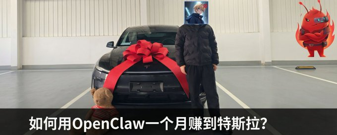
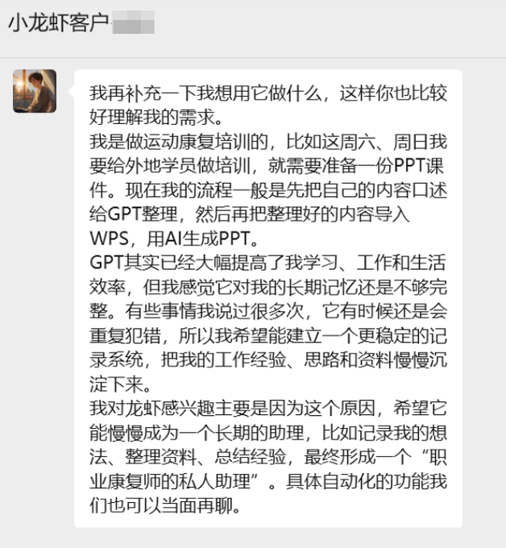

今天终于把特斯拉提了，说实话我自己都有点不真实的感觉。
今年 1，2 月，当大厂裁员消息一个接一个的时候，我刷推看到的全是焦虑："AI 要取代我们了"、"程序员要失业了"。
我呢，我选择了 ALL IN OpenClaw，一个月提了特斯拉，原谅我标题党了，只是付了首付。
我当时也慌。但慌完之后我做了一件事：去闲鱼和淘宝搜了搜"OpenClaw 安装"。
然后我就看到了这个时代最魔幻的一幕。

市场有多魔幻
OpenClaw 安装服务，价格从 30 块到 5000 块不等。
没错，同一个东西，有人收 30，有人收 5000。
我当时就懵了。
最离谱的是，我在一个群里看到有人接了个 1.6 万的单，就是帮一家公司批量安装 OpenClaw。定金 3k 已经到账。
给我一下子整不会了。
我去闲鱼和淘宝仔细搜了搜，什么奇奇怪怪的价格都有。线上安装的价格从几十到几百不等，大多都在 100~200 之间。最便宜的 30 就能部署。同城上门安装的收费会高一些，基本都在 500 左右。
然后我就想：既然这么多人在做，那我为什么不能做？
第 1 周：测试市场+首单
我先在小红书上发了几篇 OpenClaw 的使用教程，测试一下市场反应。
标题都是那种很直白的："OpenClaw 能帮你做什么"、"AI 自动化省掉 3 个员工"、"不会编程也能用的 AI 工具"。
果然，很快就有人私信问："能不能帮我装一下？"
第一个客户是做运动康复培训的，自己开工作室，经常要给外地学员做培训。他的痛点很具体：

每次备课都要把内容口述给 GPT 整理，然后再导入 WPS 用 AI 生成 PPT。虽然 GPT 已经大幅提高了效率，但长期记忆不够完整。有些事情说过很多次，GPT 还是会重复犯错。
他希望能建立一个更稳定的记录系统，把工作经验、思路和资料慢慢沉淀下来，最终形成一个"职业康复师的私人助理"。
我当时心里没底，因为这是第一次接商业项目。但我觉得这个需求很适合用 OpenClaw 解决。我报价了 3000 元，对方几乎没还价就同意了。
实际操作下来，整个配置过程花了一个下午：
- 远程帮他安装 OpenClaw 环境
- 配置一个"知识管理 Agent"，专门用来记录他的培训内容、案例和经验
- 设置自动整理功能：他口述完内容后，Agent 自动分类存档（比如"肩关节康复"、"运动损伤案例"、"训练计划模板"）
一个下午赚 3000，而且客户非常满意。他说这个系统比单纯用 GPT 好用太多了，因为 OpenClaw 能记住他的专业术语、常用案例和教学风格。
这里有个关键设计：我给 Agent 设置了"长期记忆库"。每次他口述内容，Agent 不仅会整理当前内容，还会自动关联历史记录。比如他这次讲"肩关节康复"，Agent 会自动调出之前讲过的相关案例和注意事项，提醒他补充或更新。
那一瞬间我就明白了：大部分人不知道 OpenClaw，更不知道它能做什么。而我知道，所以我能把这个工具变成服务。
第 2 周：内容获客+大单签约
第一单成功之后，我开始系统化地做内容输出。
我的打法是双平台同时推进：
- X（推特）：深度技术文章，比如"OpenClaw 的 Memory 机制详解"、"如何用 Agent 编排解决复杂业务流程"。目标是让懂行的人看到我的技术深度。
- 小红书：实战教程和落地案例，比如"3 小时搭建自动化客服系统"、"OpenClaw 帮我省掉 2 个运营"。目标是让有需求的人知道我能干什么。
这个组合拳效果很好。一周之内，我的私信从零星几条变成了每天十几条咨询。
但我很快发现一个问题：大部分咨询都是无效的。
有人问"能不能免费帮我装一下"，有人问"你这个和 GPT 有什么区别"，还有人上来就要"做一个什么都能干的 AI"。
我花了两天时间筛选，最后锁定了 5 个靠谱的潜在客户。筛选标准很简单：需求明确、预算合理、能说清楚要解决什么问题。
其中一个客户的需求让我眼前一亮。
真正让我收入破 6 位数的，是一个电商自动化项目。
客户是做跨境电商的，有 20 多个店铺，团队 10 个人。他们的痛点是：选品靠人工筛选效率低、图片和视频都要外包成本高、详情页制作慢上新速度跟不上、运营数据分析不及时。
他们问我：OpenClaw 能不能解决这些问题？我说能，但需要定制开发。
我给他们设计了一套 7 个 Agent 的自动化系统：选品分析、图片生成、视频生成、文案生成、详情页制作、上下架管理、数据分析。
整套方案报价十几万。客户几乎没犹豫就签了合同。签完之后我就后悔了，感觉报低了。电商是真赚钱啊，笑。
第 3-4 周：开发交付
签合同的时候，我信心满满地说："一周搞定。"结果整整干了两周。因为我低估了定制化开发的复杂度。
问题 1：API 对接比想象中麻烦
客户用的电商系统是定制开发的，API 文档写得很烂。我光是理解他们的数据结构就花了 2 天。
问题 2：AI 生成的内容需要大量调试
图片生成 Agent 一开始效果很差，生成的图要么风格不统一，要么细节有问题。我反复调整提示词，测试了上百次才稳定。
问题 3：客户需求一直在变
最开始说只要 7 个 Agent，后来又要加库存预警、竞品监控……每次加需求，我都要重新设计流程。
问题 4：OpenClaw 本身也有坑
OpenClaw 的文档不够详细，很多高级功能要自己摸索。我遇到过 Agent 之间数据传递出错、定时任务不稳定、API 调用超时等问题。
这里分享几个 OpenClaw 的硬核技术细节：
1. Agent 编排：串行还是并行？
我最开始把 7 个 Agent 设计成串行执行：选品→生图→写文案→做详情页。结果发现太慢了，一个产品从选品到上架要 30 多分钟。
后来改成并行+串行混合：
- 选品 Agent 先跑（串行）
- 拿到产品信息后，图片、视频、文案三个 Agent 并行跑
- 最后详情页 Agent 等前三个都完成后再跑（串行）
这样一个产品从选品到上架只要 10 分钟，效率提升近 4 倍。
2. 超时重试机制
OpenClaw 调用外部 API（比如 Midjourney）时，经常会遇到超时。我给每个 Agent 加了超时重试机制：
- 第 1 次失败：等待 5 秒重试
- 第 2 次失败：等待 10 秒重试
- 第 3 次失败：记录日志，跳过该任务
这个机制让整体成功率从 70% 提升到 95%。
3. 验收 KPI：首响时长和人工接入率
客服 Agent 的验收标准，我设置了两个 KPI：
- 首响时长：用户发送消息后，AI 必须在 3 秒内回复。超过 3 秒算超时。
- 人工接入率：AI 无法解决的问题，转人工的比例。目标是控制在 15% 以内。
这两个 KPI 非常关键，直接决定了客户是否满意。
4. 一次失败 case 和修复
有一次，客服 Agent 突然开始胡说八道。用户问"这个产品有货吗"，它回答"我们公司成立于 1998 年"。
排查了半天才发现，是因为我在系统提示词里加了公司介绍，导致 Agent 把公司信息和产品信息混在一起了。
修复方法：把系统提示词拆成两层，一层是全局规则（比如回复风格、禁止事项），一层是上下文信息（比如产品库存、用户历史）。这样 Agent 就不会混淆了。
5. Memory 管理：短期记忆 vs 长期记忆
OpenClaw 的 Memory 机制有个坑：如果不做清理，Memory 会越积越多，最后导致 Token 超限。
我的解决方案：
- 短期记忆：只保留最近 10 轮对话，超过 10 轮自动清理
- 长期记忆：把重要信息（比如用户偏好、历史订单）存到外部文件，需要时再调用
这样既保证了对话连贯性，又避免了 Token 爆炸。
整个项目最花时间的不是写代码，而是理解客户到底要什么。客户一开始说："我要一个自动化电商辅助系统。"我问："具体要自动化什么？"客户说："就是能帮我省人力的那种。"
这种需求太模糊了。我只能一点点挖：你现在哪些工作最花时间？哪些工作是重复性的？你希望 AI 帮你做到什么程度？你能接受的错误率是多少？
问了一圈下来，我才搞清楚他们真正的痛点。这也是为什么我现在接单之前，一定要先做需求访谈，写清楚需求文档，双方签字确认。不然后面扯皮扯不清。
复盘：这段经历的收获
近一个月我接了 3 个项目，总计开发了 20 多个 Agent。每天下班干到凌晨 2,3 点。为什么第一时间买车，这又是另外一个故事了。
除了大单，我还接了些小单子：远程安装服务（500-3000 元/单，2 小时搞定，现在已经被卷烂，放弃了）、简单定制（比如自动化客服、内容发布、数据抓取，5000-1 万/单）、咨询服务（有些客户只是想了解 OpenClaw 能不能解决他们的问题，我按小时收费，500 元/小时）。
这些小单子虽然单价不高，但积少成多。电商单子就是一个客户推荐转化来的大单。
回顾这段时间，我总结了几点经验：
时间线回顾
- 第 1 周：测试市场，接到首单，验证模式
- 第 2 周：内容获客，签下大单，定验收标准
- 第 3-4 周：开发交付，踩坑修复，客户续单
核心经验
- X 建立专业度，小红书获取客户，多个客户都是主动找来的
- 验收标准、修改次数、责任边界都要写清楚
- 边做边学最快，我接第一单的时候对 OpenClaw 的理解也就 60%，但我没有等到 100% 才开始
最后的最后，送给大家，普通人别无选择
这是最坏的时代，这是最好的时代
ALL IN AI, JUST DO IT